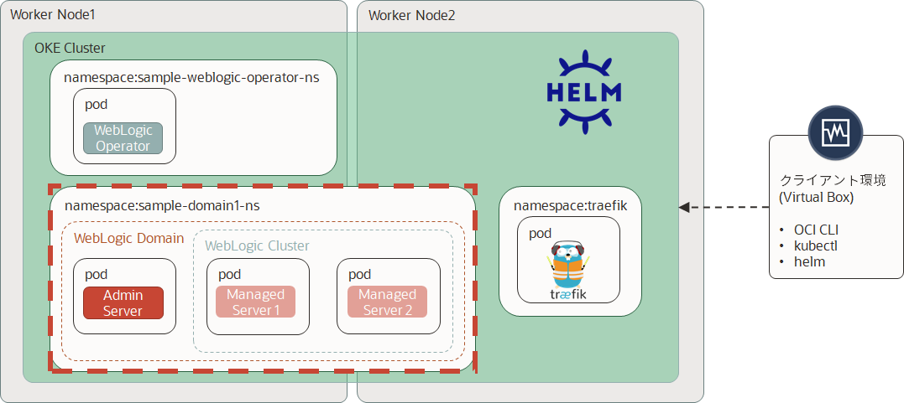
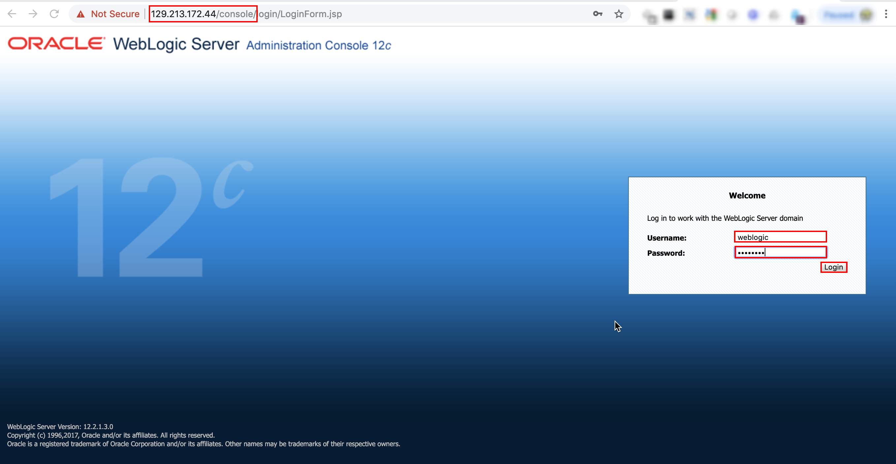
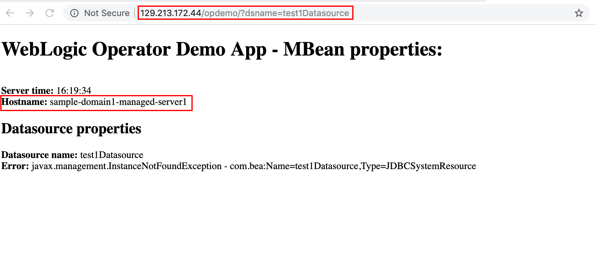

Oracle WebLogic Operator チュートリアル¶
WebLogic ドメインのデプロイ¶

WebLogic ドメインを起動するKubernetesクラスターの準備¶
ドメインのネームスペースを作成します:
kubectl create namespace sample-domain1-ns
管理サーバーのブート資格情報を含むKubernetesシークレットを作成します:
kubectl -n sample-domain1-ns create secret generic sample-domain1-weblogic-credentials \ --from-literal=username=weblogic \ --from-literal=password=welcome1
ドメインのUIDでシークレットにラベルを付けます:
kubectl label secret sample-domain1-weblogic-credentials \ -n sample-domain1-ns \ weblogic.domainUID=sample-domain1 \ weblogic.domainName=sample-domain1
TraefikロードバランサーとWebLogicオペレーターの構成を更新する¶
ドメインネームスペース（WebLogicドメインがまだデプロイされていない）を取得したら、ドメインのデプロイ先に関するロードバランサーとオペレーターの構成を更新する必要があります。
ドメインhelmをインストールする前に、WebLogic OperatorのローカルGitリポジトリフォルダーにいることを確認してください。
cd /u01/content/weblogic-kubernetes-operator/
Podの起動に時間が掛かり、デフォルトだとタイムアウトになってしまうため、Weblogic Operatorの定義にオプションを追加します。 以下のコマンドからエディタ(vi)を起動します。
kubectl edit cm -n sample-weblogic-operator-ns weblogic-operator-cm
以下の場所にintrospectorJobActiveDeadlineSeconds: "600"を追加します。インデントに注意して追加してください。
apiVersion: v1 data: internalOperatorCert: ~~~~~ ~~~~~略~~~~~ ~~~~~ introspectorJobActiveDeadlineSeconds: "600" serviceaccount: sample-weblogic-operator-sa targetNamespaces: sample-domain1-ns
完了したら保存して終了します。終了する方法はviエディタと同じ手順です。
オペレータを更新するには、次のhelm upgradeコマンドを実行します:
helm upgrade \ --reuse-values \ --set "domainNamespaces={sample-domain1-ns}" \ sample-weblogic-operator \ kubernetes/charts/weblogic-operator \ --recreate-pods
Traefikを更新するには、次のhelm upgradeコマンドを実行します:
helm upgrade \ --reuse-values \ --set "kubernetes.namespaces={traefik,sample-domain1-ns}" \ traefik-operator \ stable/traefik
上記どちらの場合でも更新されるパラメーターはドメインネームスペースのみであることに注意してください。
KubernetesにWebLogicドメインをデプロイする¶
WebLogicドメインをデプロイするには、オペレーターがWebLogicドメインを適切に起動するために必要なパラメーターを含むドメインリソース定義を作成する必要があります。
本チュートリアルではカスタムリソースオブジェクトの定義が記述されたdomain.yamlファイルを使用します。次のコマンドでローカルにコピーしてください。
curl -LSs https://raw.githubusercontent.com/nagypeter/weblogic-operator-tutorial/master/k8s/domain_short.yaml >/u01/domain.yaml
コピー後、お手持ちのエディターで内容を確認してください。
次のコマンドを適用して、ドメインカスタムリソースオブジェクトを作成します:
kubectl apply -f /u01/domain.yaml
最初に実行するイントロスペクタージョブを確認します:
$ kubectl get pod -n sample-domain1-ns NAME READY STATUS RESTARTS AGE sample-domain1-introspect-domain-job-kcn4n 0/1 ContainerCreating 0 7s
ドメインのネームスペース(sample-domain1-ns)のポッドを定期的に確認すると、すぐにサーバーが起動されていることがわかります:
$ kubectl get po -n sample-domain1-ns -o wide NAME READY STATUS RESTARTS AGE IP NODE NOMINATED NODE sample-domain1-admin-server 1/1 Running 0 2m 10.244.2.10 130.61.84.41 <none> sample-domain1-managed-server1 1/1 Running 0 1m 10.244.2.11 130.61.84.41 <none> sample-domain1-managed-server2 0/1 Running 0 1m 10.244.1.4 130.61.52.240 <none>
上記の結果と同様の3つの実行中のポッドを確認する必要があります。実行中のポッドがすべて表示されない場合は、しばらく待った後に定期的に確認してください。コンピュートインスタンスのシェイプによっては、ドメイン全体の展開に2〜3分かかることがあります。
WebLogicにデプロイされたアプリケーションまたは管理コンソールにアクセスするには、TraefikIngressを構成する必要があります。 OCIロードバランサーは、前のステップのTraefikインストール中に既に割り当てられています。
外部トラフィックをTraefikを介してドメインクラスターアドレスまたは管理サーバーのコンソールにルーティングするパスルーティングを構成するのが最も簡単な方法です。
次のIngressリソース定義を実行します:
cat << EOF | kubectl apply -f - apiVersion: extensions/v1beta1 kind: Ingress metadata: name: traefik-pathrouting-1 namespace: sample-domain1-ns annotations: kubernetes.io/ingress.class: traefik spec: rules: - host: http: paths: - path: / backend: serviceName: sample-domain1-cluster-cluster-1 servicePort: 8001 - path: /console backend: serviceName: sample-domain1-admin-server servicePort: 7001 EOF
2つのバックエンドとネームスペース、サービスネーム、サービスポートの定義に注意してください。最初のバックエンドはルートコンテキストパスでアプリケーションに到達するドメインクラスターサービスです。 2つ目は管理コンソール用の別のサービスです。
Ingressが作成されたら、以下の形式で管理コンソールのURLを作成します:
http://EXTERNAL-IP/console
EXTERNAL-IPは、Traefikのインストール中に表示されます。メモを忘れた場合は、次のコマンドを実行して取得できます:
$ kubectl describe svc traefik-operator --namespace traefik | grep Ingress | awk '{print $3}' 129.213.172.44
管理コンソールのURLをブラウザーで開きます:
管理者のユーザー資格情報（weblogic / welcome1）を入力し、Loginをクリックします

Note
このユースケースでは、Administration Consoleの使用目的はデモ/テストのみであることに注意してください。ドメイン設定はポッドで保持され、再起動すると、イメージの元の値が再び使用されます。特定の構成パラメーターをオーバーライドするには(イメージの移植性を確保するには)このチュートリアルのJDBC Datasource parametersのオーバーライドを参考に実施してください。
デモWebアプリケーションのテスト¶
サンプルアプリケーションのURLは以下の通りです:
http://EXTERNAL-IP/opdemo/?dsname=testDatasource

ページを更新し、ホスト名が変更されたことを確認します。画面上に要求に応答している管理対象サーバーの名前が表示されます。また、2つの管理対象サーバー間の負荷分散が確認できます。
続いて、WebLogic Clusterのスケーリングに進んでください。